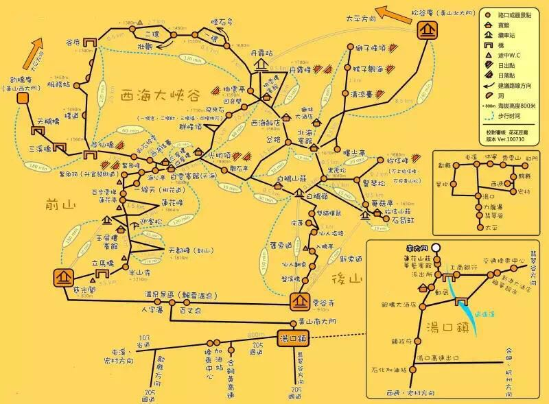
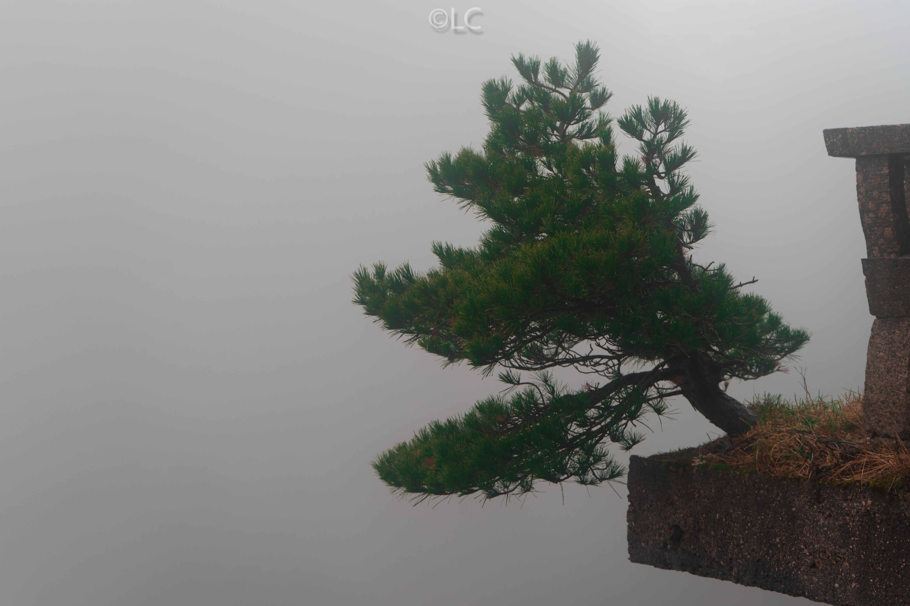
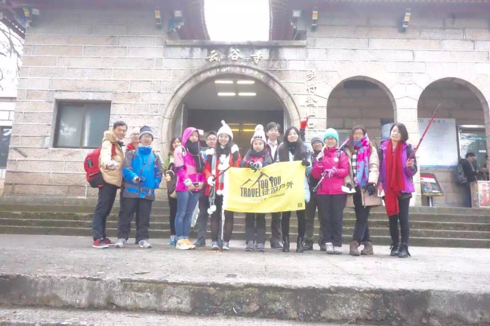

水墨黄山
五岳归来不看山，黄山归来不看岳。
时间2015.12.12，又是凌晨4点起床，楼下买了过夜的肯德基汉堡，直奔公司与另外三位同事会合。5点多一点从公司出发，陈老师一路飙车，8点赶到黄山市，与大部队（徒游户外）会合。然后坐小巴经过半个多小时，达到汤口镇，也就是黄山脚下。领队统一买好车票门票，坐景区大巴抵达第一站云谷寺。

接着就开始漫长的登山，由于当天雾气较大，所以一路都是雾蒙蒙，没什么可看。经过两个多小时，终于抵达第一站白鹅岭，把行李放到酒店白鹅山庄。刚到酒店，天气突变，雾气散去。第一次领略到了黄山云海奇观！
稍作休整（也就是吃了一碗泡面）后，继续出发，前往下一站狮子峰，途经始信峰、石猴观海等一路美景。到下午5点左右，突然天气开始变化，雾气重新上来，本来去排云亭看日出的行程取消，改为去丹霞峰。后来经验证，排云亭比丹霞峰更值得一去，没有看到日落略有遗憾。丹霞峰下来6点左右已经开始天黑，一路摸黑走回酒店，大约7点多重新回到白鹅山庄，吃了酒店的快餐（50一份）。住的是山下铺的大通铺，所以晚上比较吵闹。
第二天早上由于还在下雨，所以没有日出可看，睡到8点起床。大家洗漱完毕吃过早饭后，再次出发。由于下雨，所以一路几乎就是闷头走，走过光明的，莲花峰，到达玉屏峰，看到了小时候每个人家里都会挂在墙上的迎客松。由于天气实在太差，所以没有景色可言，直接从玉屏索道下山。

回到汤口镇上是12点多，大家在附近吃了徽菜，可能是景区附近的原因吧，味道一般。最后坐小巴到黄山市，自驾回到杭州。
虽然大部分时间天气不好，但也领略到了黄山云海的奇观！其实前山的风景应该会更好，下次有机会再去吧。四个字总结：不虚此行。
